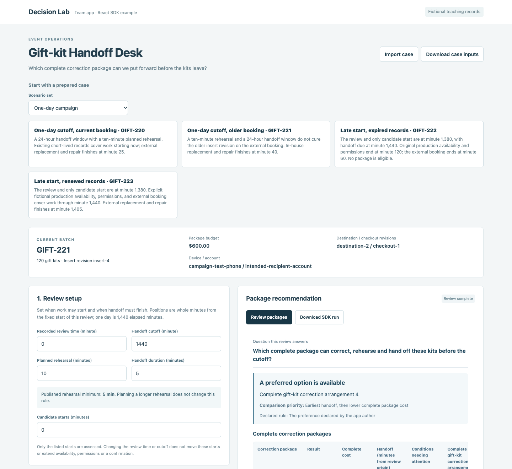
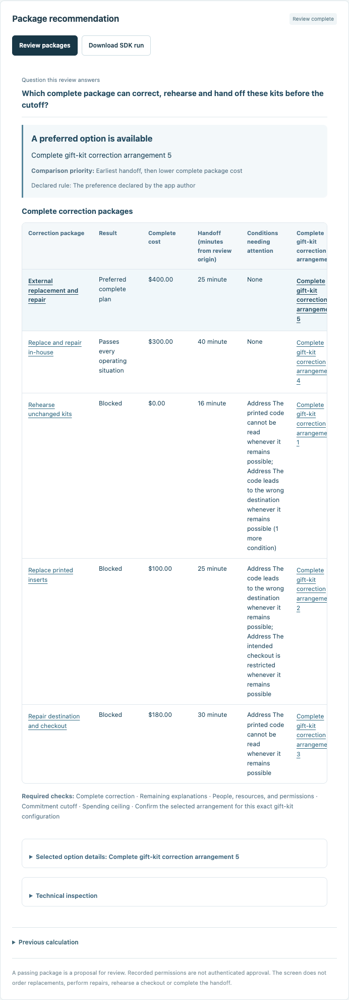
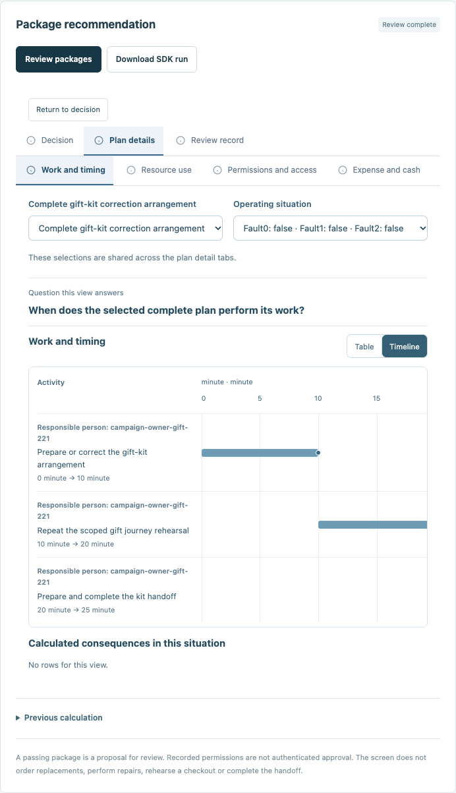

Leah is accountable for handing over 120 gift kits that recipients can actually use. Marketing expects a working campaign, finance has capped corrections at $600, and production needs a plan supported by people and records. Leah has a full day before handoff, but she still has to explain which proposal the team should act on.
Taylor, the owner of GIFT-221, has a supported in-house option: $300, finishing at T+40 min. External work could finish fifteen minutes earlier for $400. Its confirmation, however, still names insert-3 while the campaign uses insert-4. Leah cannot treat that quote as a supported booking, and Taylor needs to obtain a confirmation for the current configuration.
The CLI campaign report already applies a published decision model. Leah now needs a custom desk to inspect a flagged case and reassess new records. The developer must keep those two interfaces consistent about the same facts.
Should the developer build and maintain that decision infrastructure, or embed the existing review through the SDK? This fictional case follows that choice through to a working application and a revised handoff proposal.
What would the team otherwise build?
A workbook, shared module or solver could also support this review. The choice is how much decision infrastructure the team wants to implement and maintain alongside its interface.
| Approach | Where it can fit | Responsibility for this case |
|---|---|---|
| Handwritten application checks | A small, stable set of requirements. | Implement the complete-package and scenario review, ranking and explanations, and keep the batch and interactive implementations consistent. |
| Workbook or shared custom module | A team-owned calculation with familiar formulas or reusable code. | A shared module can also provide consistent logic. The team defines and maintains its model, case contract, coverage checks and reporting interfaces. |
| General-purpose solver | A problem needing a new optimization model or different search behavior. | Encode the domain requirements and supply the surrounding case admission, app versioning, findings and report integration. |
| Decision Lab SDK with this published app | Reusing the existing gift-kit review across custom clients. | Supply trustworthy cases, forms and mappings while reusing the modeled assessment, SDK case and report APIs, and shared React decision view. |
The developer chooses the SDK because the gift-kit model already exists and the CLI already uses it. The desk can reuse that review, its case contract and its reports. The same case should reach the same conclusion, then change when Taylor supplies a current confirmation.
Open the published decision model inside your application.
The Gift-kit Preflight CLI already assesses these campaigns. Its companion Gift-kit Handoff Desk uses the same pinned app package in a browser. The developer creates the SDK instance with its browser executor:
const executor = createBrowserExecutor();
const lab = createDecisionLab({ executor });createDecisionLab comes from @decision-lab/sdk; createBrowserExecutor comes from @decision-lab/sdk/browser. Assessment and complete report preparation execute in a browser worker. The example uses React, while these SDK calls are ordinary JavaScript.
The application opens the published package:
const opened = lab.apps.open(await readJSON(new URL(settings.appUrl, configURL), controller.signal));The SDK’s lab.cases.create also exposes the app binding, which the example checks against its configured identity. The pinned app encodes the correction packages, effects, scoped requirements and earliest-finish preference. Its commitment pattern brings correction, rehearsal and handoff into a complete plan.
The developer reuses the decision logic across interfaces. The screen supplies forms and data mapping; the package keeps its requirements and ranking together.


Use one case contract for batch and interactive work.
Leah imports the case exported from the CLI report. It contains quotes, timing, retained fault configurations, resources, permissions and confirmation. A quote and a budget alone would leave much of that basis missing.
The SDK binds the supplied inputs to the app and validates them against its declared input contract:
const snapshot = lab.cases.create({ app, inputs });
const validation = lab.cases.validate({ app, case: snapshot });
if (!validation.valid) throw Object.assign(new Error('The case is invalid.'), { issues: validation.issues });Both clients use a common admission path and structured validation issues. A case bound to the wrong app release or inputs that fail its declarations need attention before a calculated proposal is presented.
Input validation checks the declared contract. Business eligibility is assessed next. Whether a permission covers the proposed work or the confirmation names the current insert belongs to the app’s requirements; the company remains responsible for the truth of its source records.
The one-day cases plan ten minutes of rehearsal under a published five-minute minimum. The earlier ten-minute-minimum adaptation is a separate policy. A longer planned duration changes a case; a new minimum requires a reviewed app release.
Assess complete alternatives with one SDK call.
When Leah selects Review packages, the application supplies the bound case to the SDK and requests the complete report:
const result = await lab.run({
app,
case: snapshot,
execution: { signal: controller.signal, timeoutMs: 15000 },
...(run ? { context: { priorRun: run } } : {}),
reportOptions: { scope: 'all', locale: 'en-US' },
});lab.run applies the published model to the supplied inputs. For GIFT-221’s one candidate start, the retained calculation covers five packages × eight fault configurations: 40 package-and-scenario contexts. Each complete package is checked against the modeled requirements; the app ranks those that pass.
The same call returns the assessment and prepared report, including execution status and coverage information. Requesting every report does not itself establish that all requested material was retained.
Check what the result actually establishes.
Leah needs a supported finding before putting a package forward. The desk first requires completed execution and complete retained-report metadata:
if (run?.execution?.status !== EXECUTION_STATUS.COMPLETED
|| !inspectReportCompleteness(run?.report).complete) {
return unavailable('The calculation or its report is incomplete. Review again before proposing a package.');
}EXECUTION_STATUS and inspectReportCompleteness come from @decision-lab/sdk. The helper checks the supported report format and explicit materialization, requested-view, retained-context, truncation and assessment-completion flags. Missing or incorrectly typed flags do not establish completeness.
The SDK’s named states have matching literal TypeScript types. Saved runs keep their existing string values, so the team’s retained records remain compatible with these code changes.
That receipt checks metadata. It does not validate report identity or the full report schema, verify the pinned app, establish a preferred package, accept a human review or evaluate business rules. The client separately checks the app binding, retained timing, complete costs and schedules.
Next it resolves the retained native commitment assessment, then uses the SDK’s named questions:
try { assessment = commitment.resolveCommitmentAssessment(run.assessment, run.report); }
catch { return unavailable('The complete package assessment is unavailable in this result.'); }
if (!commitment.isAssessmentComplete(assessment)) {
return unavailable('The calculation has not checked every admitted package and fault scenario.');
}
const hasWitness = commitment.hasFeasibleWitness(assessment);
const recommendation = assessment.recommendation;
// An unverified positive claim is unavailable, not evidence that every plan is blocked.
if (assessment.feasiblePlanIds.length && !commitment.hasEstablishedPreference(assessment)) {
return unavailable('The calculation has not established a preferred package.');
}isAssessmentComplete asks whether evaluation, valid admission and search coverage are complete. hasFeasibleWitness asks whether checked feasible-plan identities have complete feasible plans behind them. hasEstablishedPreference asks whether a complete assessment establishes its preferred alternatives. None of those answers substitutes for the others:
| Retained assessment | Complete? | Feasible witness? | Established preference? |
|---|---|---|---|
| Every supplied package checked; none passes | Yes | No | No |
| Limited search with a checked feasible package | No | Yes | No |
| Complete review with a valid preferred tie | Yes | Yes | Yes |
Leah’s desk requires a complete review before offering a proposal. A feasible witness from limited search would not be promoted to an established best package. When preference is established, the application keeps every retained preferred tie rather than selecting an arbitrary winner.
These helpers inspect native retained claims. They do not evaluate rules, validate an entire artifact, prove that a result is current, authenticate records or accept a human review. An integration needing completeness diagnostics can use inspectAssessmentCompleteness, which returns an immutable receipt with complete and issues containing code, path and message. This sample uses the boolean predicate.
The desk keeps its own vocabulary separate: REVIEW_OUTCOME describes eligible, blocked or unavailable business results; REVIEW_STATE describes the interface’s lifecycle; BOOKING_CONFIRMATION distinguishes a missing record from a positive or negative one. These are local client constants. For Leah, REVIEW_STATE.COMPLETE can coexist with REVIEW_OUTCOME.BLOCKED: the review established that no package passes. An incomplete calculation remains unavailable and calls for reassessment; it is not treated as a finding that every package failed.
Initially, the old insert confirmation blocks external work and in-house replacement and repair is preferred at $300 / T+40 min. Leah then records a separately supplied fictional confirmation for insert-4. Reassessing the updated case makes external replacement and repair preferred at $400 / T+25 min.
In-house work still passes. The external package becomes preferred through the app’s configured rules; the developer adds no second ranking rule to the screen.


Reuse the decision screen as well as the assessment.
The developer renders DecisionView from @decision-lab/react-views with the retained SDK report and the desk’s business presentation profile:
import { DecisionView } from '@decision-lab/react-views';
import '@decision-lab/react-views/styles.css';
<DecisionView report={run.report} profile={config.decisionPresentation} />The SDK prepares the decision projection. The shared component starts with the question, finding, comparison priority, complete alternatives, costs and blockers. The profile supplies business labels and USD formatting; its handoff column selects the retained end of the handoff activity. These settings present calculated values without adding a feasibility rule or recalculating a schedule.
Leah can select a package and open Selected option details for the supporting requirements and schedule. Technical inspection → Inspect complete report opens the complete native report and its representation controls. Return to decision restores the business comparison without another assessment.


The same retained report supports both levels of detail. The developer reuses the comparison, detail navigation and complete-report inspection while controlling the team’s forms and data source. Distinct alternatives and genuine preferred ties stay visible.
Reuse the full review when timing changes.
The same model also handles changes that a deadline-only check would miss. In GIFT-222, review and candidate start move to T+23 hr, with a T+24 hr cutoff. Some packages could finish before cutoff, but their recorded availability and permissions ended at T+2 hr and the external confirmation ended at T+1 hr. No listed package passes.
GIFT-223 separately supplies current late records. Its external package finishes at T+23 hr 25 min, leaving 35 min before cutoff. The SDK applies the same timing, scope, resource and preference requirements to that changed case.
Keeping those requirements together matters: changing the cutoff or a candidate start does not renew a permission, extend a confirmation or remove a retained fault. The assessment compares the supplied packages, candidate starts and admitted fault configurations.
The model must fit the business problem. These examples allocate resources independently to each campaign. Scheduling several campaigns against a shared production team requires a model that represents those shared demands, whichever implementation approach the team chooses.
Retain the inputs and complete report for the handoff.
For a current review that passes those checks, the native SDK run retains the evaluated inputs, app identity, assessment and complete report. The application serializes native artifacts through the SDK:
const content = lab.sources.renderJSON(artifact, { maxBytes: 50000000 });Download SDK run preserves the current complete calculation; Download case inputs preserves the canonical inputs for another review or CLI assessment. The company chooses where to store those artifacts and how to use them in its own reports or approval process.
The application still owns importing files, mapping units, managing edits and cancelling superseded requests. An edit withdraws the current recommendation; the earlier calculation stays in a separate disclosure and is marked for reassessment. The company owns authentication, system integrations and storage. People authenticate records, approve work and carry out the correction and rehearsal.
The Gift-kit Handoff Desk repository directory provides the full implementation. These selected SDK and shared-view excerpts link to exact lines in the pinned public revision, with file hashes in its source manifest.
A proposal Leah can explain. A model the developer can reuse.
Taylor supplies the current confirmation for insert-4. Leah reassesses the case and can now put forward external replacement and repair at $400, finishing at T+25 min. The proposal includes correction, the planned ten-minute rehearsal and handoff. It stays within the $600 limit, while the $300 in-house option remains available. The earlier finish follows the app’s configured priority; production and finance can review its basis before authorizing the work.
The developer’s choice also has a concrete result. The custom desk and CLI produce matching findings from the same app and case. Updating the confirmation changes the recommendation through that shared model, without adding another gift-kit feasibility and ranking implementation to the screen. The developer still owns the forms, data mapping and system integration.
Leah can explain the extra $100 and the fifteen-minute difference. Taylor can point to the confirmation that supports the changed proposal. The developer can maintain their working interface around one published review, with the complete calculation available for the team’s handoff.